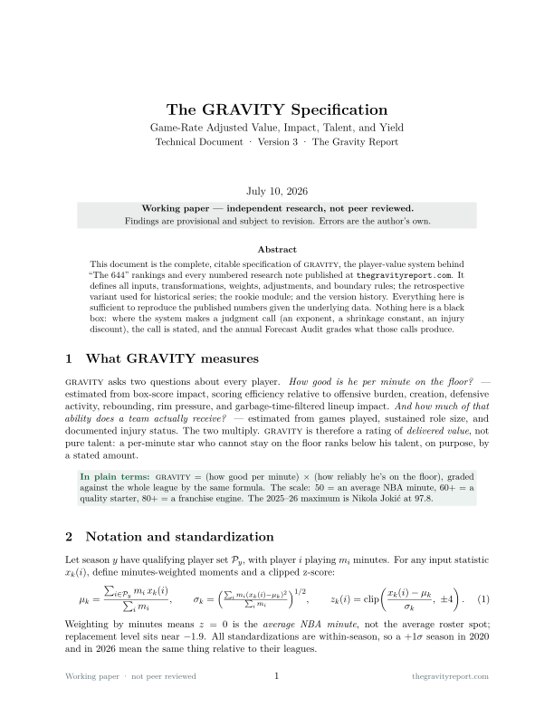

Technical document · Version 3 · Citable
The GRAVITY Specification
Game-Rate Adjusted Value, Impact, Talent, and Yield — the player-value model, in full.
GRAVITY is an original player-value model: it estimates a player's per-minute quality and adjusts for role, availability, and documented injury risk — measuring not just how good a player is, but how much of that ability a team actually receives. It is the system behind The 644, the full-league ranking, and every research note this publication ships. (It is unrelated to the NBA's defensive-attention "gravity" statistic — different quantity, different purpose. Ours is a value model.)
THE SCALE 50 league-average minute 60+ quality starter 80+ franchise engine 97.8 Nikola Jokić (2025-26 max)
What the document contains
- Minutes-weighted standardization and all seven component constructions (efficiency under load, creation, offensive load, stocks, rebounding, rim pressure, volume), with the reasoning for design choices like the 0.7 usage exponent.
- Every weight in the skill blend and season impact; the two-year blend, credibility shrinkage toward replacement (ρ = −1.9), and playoff and age adjustments.
- The complete injury-override table — every hand-set multiplier in the model, with reasons. Nothing else is manually adjusted.
- Tier definitions, the GRAVITY-RS historical variant, and the rookie module with its slot priors — including the creation-term deficiency the Morant paper exposed, scheduled for v4 before the All-Star 2027 edition.
- Version history (v1.0 → v2 Butler correction → v3 CTG integration), the edition calendar, data sources and reproducibility statement, and known limitations.

House rule: the weights are specified by judgment before any player is ranked
— they are not fitted to a target. Transparency makes the judgment inspectable; the sensitivity analyses
published with the research notes test how much conclusions depend on it, and the
Forecast Ledger validates the model the only way that counts: registered
predictions, graded in public, annually.
Cite the model
The Gravity Report (2026). "The GRAVITY Specification: Game-Rate Adjusted
Value, Impact, Talent, and Yield (v3)." Technical document.
https://thegravityreport.com/notes/spec/
@techreport{gravity2026spec,
author = {{The Gravity Report}},
title = {The GRAVITY Specification: Game-Rate Adjusted Value, Impact,
Talent, and Yield (v3)},
institution = {The Gravity Report},
type = {Technical document},
year = {2026},
month = {7},
url = {https://thegravityreport.com/notes/spec/}
}